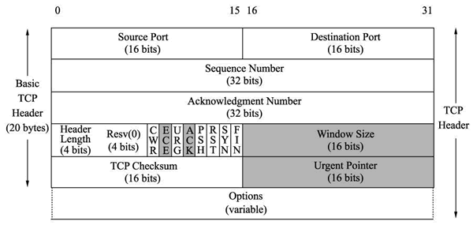

首页 > 编程笔记
TCP报文格式解析
TCP 报文是 TCP 层传输的数据单元，也称为报文段。TCP 报文中每个字段如图所示。

上图中 TCP 报文中每个字段的含义如下：
源端口和目的端口字段
- TCP源端口（Source Port）：源计算机上的应用程序的端口号，占 16 位。
- TCP目的端口（Destination Port）：目标计算机的应用程序端口号，占 16 位。
序列号字段
CP序列号（Sequence Number）：占 32 位。它表示本报文段所发送数据的第一个字节的编号。在 TCP 连接中，所传送的字节流的每一个字节都会按顺序编号。当SYN标记不为1时，这是当前数据分段第一个字母的序列号；如果SYN的值是1时，这个字段的值就是初始序列值（ISN），用于对序列号进行同步。这时，第一个字节的序列号比这个字段的值大1，也就是ISN加1。确认号字段
TCP 确认号（Acknowledgment Number，ACK Number）：占 32 位。它表示接收方期望收到发送方下一个报文段的第一个字节数据的编号。其值是接收计算机即将接收到的下一个序列号，也就是下一个接收到的字节的序列号加1。数据偏移字段
TCP 首部长度（Header Length）：数据偏移是指数据段中的“数据”部分起始处距离 TCP 数据段起始处的字节偏移量，占 4 位。其实这里的“数据偏移”也是在确定 TCP 数据段头部分的长度，告诉接收端的应用程序，数据从何处开始。保留字段
保留（Reserved）：占 4 位。为 TCP 将来的发展预留空间，目前必须全部为 0。标志位字段
- CWR（Congestion Window Reduce）：拥塞窗口减少标志，用来表明它接收到了设置 ECE 标志的 TCP 包。并且，发送方收到消息之后，通过减小发送窗口的大小来降低发送速率。
- ECE（ECN Echo）：用来在 TCP 三次握手时表明一个 TCP 端是具备 ECN 功能的。在数据传输过程中，它也用来表明接收到的 TCP 包的 IP 头部的 ECN 被设置为 11，即网络线路拥堵。
- URG（Urgent）：表示本报文段中发送的数据是否包含紧急数据。URG=1 时表示有紧急数据。当 URG=1 时，后面的紧急指针字段才有效。
- ACK：表示前面的确认号字段是否有效。ACK=1 时表示有效。只有当 ACK=1 时，前面的确认号字段才有效。TCP 规定，连接建立后，ACK 必须为 1。
- PSH（Push）：告诉对方收到该报文段后是否立即把数据推送给上层。如果值为 1，表示应当立即把数据提交给上层，而不是缓存起来。
- RST：表示是否重置连接。如果 RST=1，说明 TCP 连接出现了严重错误（如主机崩溃），必须释放连接，然后再重新建立连接。
- SYN：在建立连接时使用，用来同步序号。当 SYN=1，ACK=0 时，表示这是一个请求建立连接的报文段；当 SYN=1，ACK=1 时，表示对方同意建立连接。SYN=1 时，说明这是一个请求建立连接或同意建立连接的报文。只有在前两次握手中 SYN 才为 1。
- FIN：标记数据是否发送完毕。如果 FIN=1，表示数据已经发送完成，可以释放连接。
窗口大小字段
窗口大小（Window Size）：占 16 位。它表示从 Ack Number 开始还可以接收多少字节的数据量，也表示当前接收端的接收窗口还有多少剩余空间。该字段可以用于 TCP 的流量控制。TCP 校验和字段
校验位（TCP Checksum）：占 16 位。它用于确认传输的数据是否有损坏。发送端基于数据内容校验生成一个数值，接收端根据接收的数据校验生成一个值。两个值必须相同，才能证明数据是有效的。如果两个值不同，则丢掉这个数据包。Checksum 是根据伪头 + TCP 头 + TCP 数据三部分进行计算的。紧急指针字段
紧急指针（Urgent Pointer）：仅当前面的 URG 控制位为 1 时才有意义。它指出本数据段中为紧急数据的字节数，占 16 位。当所有紧急数据处理完后，TCP 就会告诉应用程序恢复到正常操作。即使当前窗口大小为 0，也是可以发送紧急数据的，因为紧急数据无须缓存。可选项字段
选项（Option）：长度不定，但长度必须是 32bits 的整数倍。关注公众号「站长严长生」，在手机上阅读所有教程，随时随地都能学习。内含一款搜索神器，免费下载全网书籍和视频。

微信扫码关注公众号